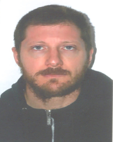

David Román Terol
"Román"
ROL:Director Tecnico
Edad: 43 años
Club: CD Aquatic Campanar
Biografía
David es un reconocido técnico de natación paralímpica nacido el 27 de febrero de 1982 en Valencia. Con una amplia trayectoria en el ámbito de la natación adaptada, ha desempeñado funciones como entrenador en la Federación Española de Deportes de Personas con Discapacidad Física (FEDDF) y ha sido parte del equipo técnico en eventos internacionales, incluyendo los Juegos Paralímpicos de Río 2016, Ahora desempeña el rol de Director Tecnico en este Club, donde antes era el entrenador principal
Logros Deportivos
- Su labor se ha centrado en el desarrollo y perfeccionamiento de nadadores con discapacidad física, contribuyendo significativamente al crecimiento del deporte adaptado en España. David es considerado una figura clave en la formación de talentos emergentes dentro de la natación paralímpica, destacando por su compromiso y dedicación al deporte adaptado